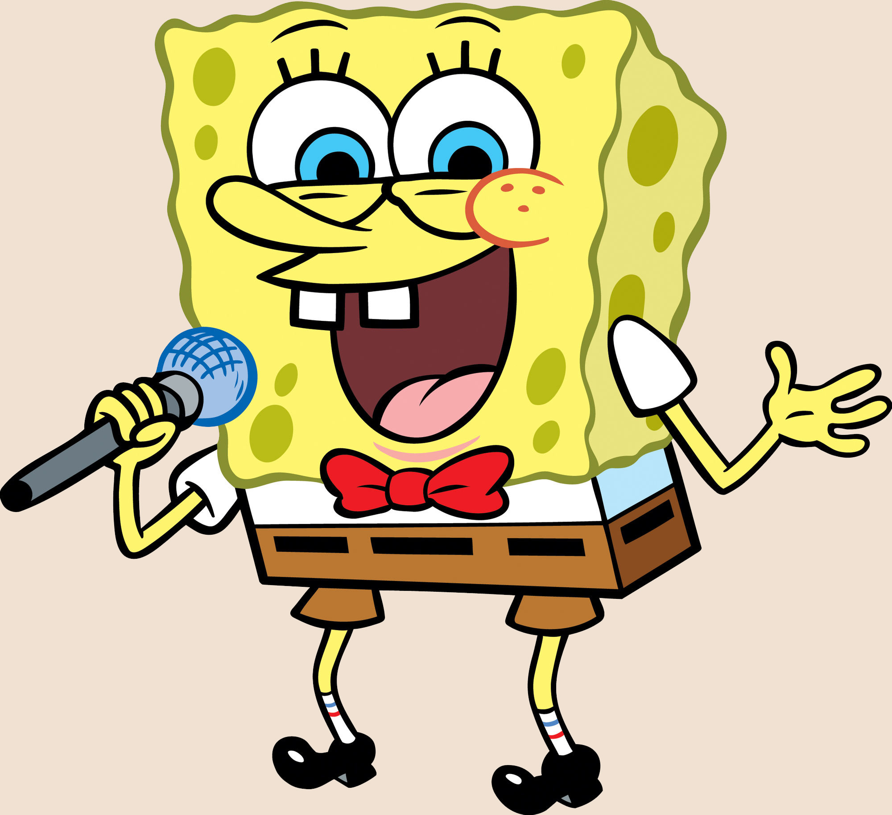

О сериале
«Губка Боб Квадратные Штаны», также известный как «Спанч Боб Сквэр Пэнтс» (англ. SpongeBob SquarePants), — американский мультипликационный сериал, который транслируется на телеканале «Nickelodeon». Появился в эфире 1 мая 1999 года и стал одной из самых популярных анимационных программ телевидения
Персонажи
SpongeBob
Главный персонаж сериала. Любит свою работу поваром в Красти Краб
Patrick
Лучший друг Губки Боба, морская звезда. Любит покушать.
Squdward
Сосед Губки Боба. Очень любит тишину и спокойствие.
Gary
Домашний питомец Губки Боба. Мяукает. Много ест.
Eugene H.Krabs
Работадатель Губки Боба. Хозяин кафе "Красти Краб".
Sandy Cheeks
Сосед Губки Боба. Очень любит тишину и спокойствие.
Смотреть все серии онлайн
Кто озвучивал Спанч боба
Сергей Балабанов Актёр Московского театра юного зрителя. Ведущий детских телепередач. Принимает участие в озвучивании зарубежных фильмов.